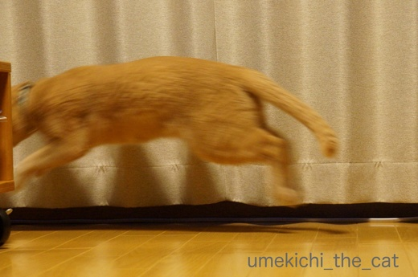
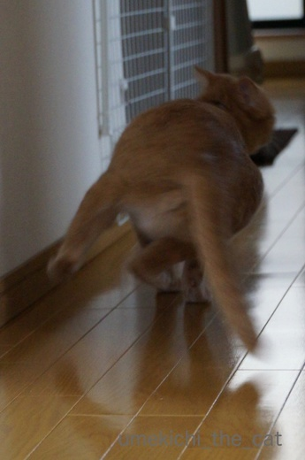
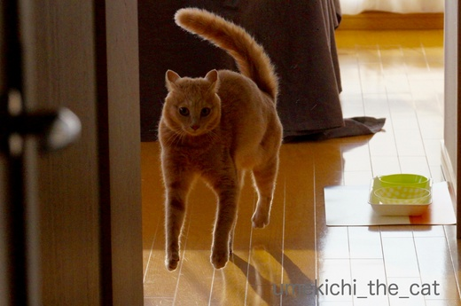
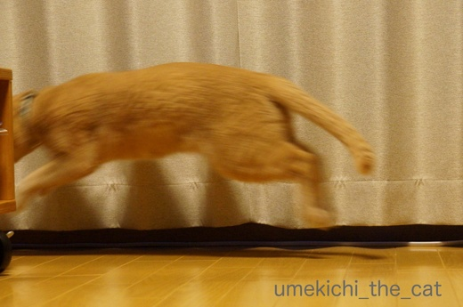
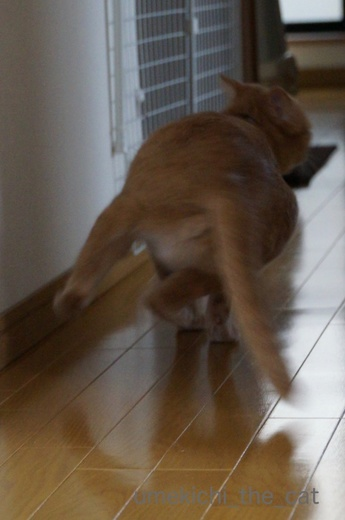
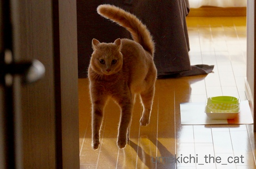

あほっさ [梅吉]
「あほっさ」ってなによ？ですよねー(≧▽≦)

じっとしているな、と思ったら

突然びょ〜ん。

まったりしているな、と見ていたら

突然走る！

走る！！

走り過ぎ〜！！！

![[猫]](https://blog.ss-blog.jp/_images_e/101.gif) じゃあ、わし、とぶで！！！！
じゃあ、わし、とぶで！！！！
・・・・・・と梅吉は（他のお家のにゃんずさんもですよね？）突然火がついた様に走り出します。
走るだけでは物足りないのか窓枠をよじ登るという垂直運動も含まれます。
一体この行動はなんなのでしょう(･◇･)
夕方以降に多い様な気がするので狩の行動なのかなぁ。
我が家ではこの行動を「あほ」な「発作」＝「あほっさ」と呼んでいます(*>艸<)
 ↑ガブッと一押し↑
↑ガブッと一押し↑
今日も今日とてキャリーでお昼寝日和。半分白目気味〜。
空を見るともくもくと雲が立っています。どう見ても夏空。
そろそろ梅雨明けになるのでしょうか。

じっとしているな、と思ったら

突然びょ〜ん。

まったりしているな、と見ていたら

突然走る！

走る！！

走り過ぎ〜！！！

・・・・・・と梅吉は（他のお家のにゃんずさんもですよね？）突然火がついた様に走り出します。
走るだけでは物足りないのか窓枠をよじ登るという垂直運動も含まれます。
一体この行動はなんなのでしょう(･◇･)
夕方以降に多い様な気がするので狩の行動なのかなぁ。
我が家ではこの行動を「あほ」な「発作」＝「あほっさ」と呼んでいます(*>艸<)
今日も今日とてキャリーでお昼寝日和。半分白目気味〜。
空を見るともくもくと雲が立っています。どう見ても夏空。
そろそろ梅雨明けになるのでしょうか。
タグ：あほっさ

カフェオレ色の梅吉

梅吉 2023年8月10日 永眠


梅吉と出会った譲渡会

犬猫の理由なき殺処分ゼロ
妄想広告
UMEKICHI 光

爆発的に早い！
時々攻撃的！
Thanks to Mr.Boss365
爆発的に早い！
時々攻撃的！
Thanks to Mr.Boss365

あるある～なんで今走り出したん？と問いたくなるようなのが！うちは1匹走り出したらもう1匹も走り出しますからね(>_<)
飛んでる写真しっぽがボワンですね。好きだわ～これ(*^^*)
by palpal (2017-07-14 16:33)
洒落たネーミングですね うちは「うんこ騒ぎ」もしくは「満月祭り」
騒ぎの理由は大抵このどちらか
by テオ (2017-07-14 17:55)
にゃんこあるあるなのですね♪
窓枠まで垂直に上っていくとは
さすがです(#^.^#)
by きぃ (2017-07-14 19:48)
いきなりのスイッチなんなんでしょうね?いきなりの走り回られたらビックリですね！
by みぃにゃん (2017-07-14 20:03)
梅吉くん、いい動きしますねえ！
それをまた素早くキャッチされてて♪
見覚えはある動作です～うちの場合はそれなりに理由あるような感じがしてましたけど‥といっても大した理由ではなくて、ご機嫌で遊びたくなったとか＾＾；
by sana (2017-07-14 20:20)
「あほっさ」
なるほど～ネーミングセンスが最高ですね！＾＾
梅吉君のこの動きは初めてみます。
やっぱり俊敏に動くんですね。
そういえばインコの突然激しく飛び回るときがあるんです。
ギャギャギャいいながら・・
不思議ですよね。アニマルって(;´∀｀)
by muku (2017-07-14 20:29)
梅吉さん元気が余ってますね! 斜めになって走るとこや飛んだ瞬間よく撮れましたねー。特に飛んだ瞬間筋肉ムキムキ!!
若い猫はみんなやるけど、うちでもつられて一緒に走り回る奴がいて、うるさいったらありゃしない。5匹ぐらいで走られたらもう最悪です。
by zombiekong (2017-07-14 20:51)
梅吉さん、何かが見えてるのかなあ？^^;
by yes_hama (2017-07-14 21:45)
うちの猫もあります。突然走るの。
「あほっさ」とは呼びませんが(^-^;
そう言うんですね。凄く勉強になりました(^^)
今度、使わせてもらいます。
by riverwalk (2017-07-14 21:46)
↑ コメント見てると、梅吉くんに限ったことではないのですね。
にゃんこは、普段ほとんど寝ていそうなのに、
一瞬にして、全開で動けるのがすごいと思います。
走る姿が、しなやかで美しいです！
by うめむす (2017-07-14 21:50)
『あほっさ』急な動きが撮れていますね。
もしかして、ちぃさんも一緒に走っています？（笑）
飛んでいるニャンさんは誰でしょう？
梅ぴょんさんですか？
by kiki (2017-07-14 21:56)
「あほっさ」言い得て妙！ですね（＾O＾）
猫あるあるですね。
それにしても飛んでいる梅吉さん良く獲れましたねぇ～
何かに驚いたのでしょうか？
by Moon (2017-07-15 02:08)
ありますね。
3～4匹だった頃は
1階から2階へ～、2階から1階へ～、・・・
家の中を暴走してましたね。
今は部屋を区切ってますので
壁を蹴って上の方にあがったり
部屋の中を暴走してます＾＾；
by ぽちの輔 (2017-07-15 06:29)
おはようございます。
梅吉先生の俊敏な動きを狙うカメラマンも大変ですよね〜、
転けないようにお気をつけください。＾＾
by KENT0mg (2017-07-15 08:13)
palplaさん＞突然走り出すのって感染るんですね(･◇･)
遅れて走り出した方は「なんやわからんけど走るわ！」って感じかな(≧艸≦)
テオさん＞お嬢様エトちゃんからはイメージしにくい
ストレートな「うんこ騒ぎ」に爆笑でした〜ww
梅吉はトイレ・満月とは関係ないようでまさに「あほ」ですねん。
きぃさん＞わんこは突然走り出したりしないですよね〜(^▽^;)
垂直運動は右の窓枠を登ったら律儀に左側のも登ります。
あほっさの最中も意外にきっちりしている梅吉ですww
みぃにゃんさん＞突然走り出すので「ああ、始まった・・・」という感じです。
走り出すと誰も止められないので蹴飛ばされない様に道を譲るしかありません(＠◇＠)
sanaさん＞そうなんです。
いい動きなんですけど無駄な動き以外の何者でもない・・・(^▽^;)
ぐったりしているより良い、元気な証拠と
たたみやフローリングにできるキズ、ボロボロの窓枠は見ない様にしています(=_=;)
mukuさん＞びっくりするぐらい俊敏に動きます。
私に漫画が描けるなら、脚は「ぐるぐる」で表現しますよ＾＾
名前を呼んだ時にもこのくらい素早くやって来てくれると良いんですが・・・
むのすけくんにも突然の発作が！？
家の中飛び回られるのもびっくりしちゃいますねー(･◇･)
zombiekongさん＞走り始めた時に行く手を塞がない様に傍によけて
連写、連写で撮りました〜＾＾
団体で爆走されたら破壊力が凄そうです！！
にゃんこもzombiekongさんもケガされませんように。
yes_hamaさん＞え・・・・？なに、なにー？？
何かいるんですかー(꒦ິ⌑꒦ີ)うめきち〜(꒦ິ⌑꒦ີ)(꒦ິ⌑꒦ີ)
riverwalkさん＞ユキちゃんおっとりしていそうだから走らないかと思ってました。
今の所我が家限定の「あほっさ」ですがよろしければお使いくださいませ〜＾＾
うめむすさん＞確かに寝ている時間は長いですが
マジ寝４割、狸寝入り6割くらいなんじゃないのかな〜と思っています。
ぐっすり寝ているな、と思ってフードの入っている箱を開けたら
瞬間移動の様に背後に来ている時がありますから・・・Σ(ﾟ◇ﾟ；)
いつでも動ける様に体勢を整えている、猫は油断がなりませんよーヾ(*ΦωΦ)ﾉ
kikiさん＞残念ながら梅吉に合わせて早くは走れませんよー(^▽^;)
やってみたら２〜3日は動けなくなりそうですww
梅ぴょん良いですね＾＾梅吉と梅ぴょん、二匹いたら大変そうですけど・・・
Moonさん＞「あほっさ」よろしければお使いください＾＾
飛んでいる梅吉は、カメラを構える私に向かって
「おらおらおらおら〜〜〜」と向かって来ているんですよ・・・
時々変なスイッチが入りがちな梅吉です(^▽^;)
ぽちの輔さん＞階段を爆走！
迷惑でしたでしょうけれどにゃんこには良い運動ですね(⌒_⌒;
うちにも階段があったら更に激しい「あほっさ」が起きそうですww
KENT0mgさん＞そうそう、コケやすいお年頃になって来ましたよ。
病院で「どうしました？」「はい。猫の写真を撮っててコケました。」
は避けたいところです(^▽^;)
by ちぃ (2017-07-15 15:40)
確かに～っ！！「あほっさ」起きます！！
特に男の子の発症事例が多いような気がします～ｗ
暖かく大きな心で見守るしかないのでしょうね。
手の施しようが・・・( ；∀；)
でも、健やかにのびのび育ってる証拠なのかも(^-^)
by emi (2017-07-15 17:47)
ニャンコは時々目に見えない位？の早さで
走るイメージですが
梅吉くんとてもしっかり写真、撮れてますね~。
カッコいいな。
あほっさ^m^
by ふにゃいの (2017-07-15 19:37)
ありますよね(*_*)
エェ、今大人しくまったり寝てたはずなのに、いきなりの大暴走(°_°)
我が家は４ニャンなので１ニャンが大暴走を始めると
もれなく他のニャンズを巻き込んでとても騒々しい大運動会になります(ｰ ｰ;)
そしてかみさんの「いい加減にしなさい！」の声とともに最初に走り始めた
ニャンが捕まって終了ですw
あっ、私は皆が避けていくので巻き込まれないですよぉ( ^ω^ )→悲しくなんかないです(T . T)
by ニッキー (2017-07-15 19:47)
あほっさ、初めて体験した時は打ちどころが悪くて頭が変になったのかとマジで心配しました！
晩御飯が並んだテーブルの上を、皿一つ踏まずに失踪していく様子、動画に撮りたいのですがいまだに成功していません^^；
尻尾ぼわん＆ジャンプが秀逸、梅吉さん、やるときはやる男だ！(*^▽^*)
by ゆきち (2017-07-15 20:36)
うちもよく急にスイッチはいりますねｗｗ
うちの場合連鎖反応で、１匹が走るともれなく何匹が付いてくる！！
みたいな感じですｗｗ
それを夜中にしたりするので煩いですｗ
by sumi-cyan (2017-07-16 02:25)
あります、あります！！確かに、夜が多いかも！！
突然走り出すから、最初はビックリしたし、
一体、ナニガ見えてるんだ！？と、
勝手な妄想で、夜、眠れなくなることもありましたw
我が家のニャンズは、うぅぅぅーーーーーとか、唸りながら走るし(^^;;
それにしても、あほっさな写真、良く撮れてますね。動きが早いのに、素晴らしい＼(^^)／
by morichan (2017-07-16 14:55)
emiさん＞「あほっさ」の症例は男子の割合が高いかも、なんですね。
男子は人間もにゃんこもいつまでたってもお子ちゃま！？
のびのび育っている、元気でよろしい・・・と
走り回る梅吉に蹴飛ばされない様に隅に避けつつ
目を細めて見守ることにいたします(^_－)☆
ふにゃいのさん＞火がついた時の梅吉のスピードは弾丸並み！？
「カフェオレ色のいなずま」との異名もあります(*>艸<)
肉眼では良く分からなかった走っている時の表情も
連写モードで撮りまくってわかりました〜。
めっちゃ真剣な表情で走っているのに爆笑でした(≧▽≦)
ニッキーさん＞ノエルさんはともかく
他のにゃんずさんの大きなお体で走られたら色んな物がなぎ倒されそうです(^▽^;)
ああ、ニッキーさんは大丈夫なのですね・・・・
黄金の足を傷つけてはいけない、とにゃんずさんのお心遣いかも・・・(T . T)
ゆきちさん＞こてつくんは障害物は上手に避けて行くのですね〜。
梅吉は火がつくとあたりが見えなくなる様で
水飲み入れを蹴散らしぼけっと立っているおかーさんを駆け上り・・・
はい、やる時はやります(^▽^;)
sumi-cyanさん＞夜中に、団体で走られたら寝ていられませんね(^▽^;)
それにしてもつられて走り出すニャンコさんたちは一体どういう気持ちで
走っているのか・・・・
morichanさん＞夜中に「うぅぅぅーーーーー」って走られたら
人間も警戒しちゃいますよねΣ(ﾟ◇ﾟ；)
窓の外！？玄関の前！？何もいないのに唸られるのは更に妄想膨らみます・・・
私だったら電気つけっぱなしにして寝そうです^▽^;)
あほっさな写真は大量のボツ写真の中からほんの数枚使えるのがありました！
頑張りましたー＾＾
by ちぃ (2017-07-17 15:17)